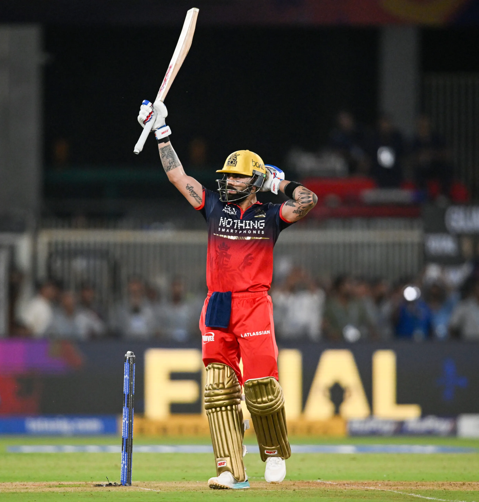
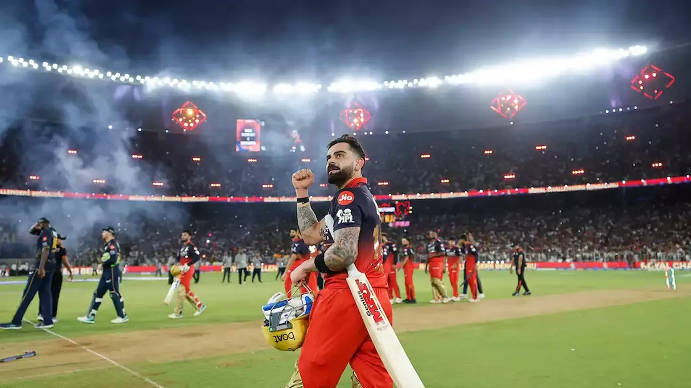

Sixteen Years of Almost
If you're an RCB fan, you know what pain feels like. Not the sharp, sudden kind. The slow kind. The kind that builds over years, season after season, final after final that never comes, and when it does come, it slips away like it was never meant to stay.
From 2008 to 2024, Royal Challengers Bengaluru were the most talented heartbreak in IPL history. They had Virat Kohli. They had AB de Villiers. They had Chris Gayle smashing 175 in a single innings. They had squads that looked unbeatable on paper and collapsed the moment it mattered most.
Four times they reached the playoffs. Three times they made it to the final or eliminator. Zero trophies. Every single year, the same chant echoed through Chinnaswamy and across every RCB fan group on the internet: "Ee sala cup namde." This year, the cup is ours.
It became a meme before it became a prayer. And for the longest time, it stayed a meme.
Then 2025 happened. RCB won their first IPL title, and the entire cricketing world stood still for a second. The franchise that had become synonymous with beautiful failure had finally done it. Fans cried. Players cried. Social media broke. It was perfect.
But here's the thing about winning for the first time: everyone says the second one is harder. Everyone says defending a title is where real teams separate themselves from one-season wonders. And honestly? A lot of people expected RCB to come back down to earth in 2026.
They didn't.
The Night Everything Changed
May 31, 2026. Narendra Modi Stadium, Ahmedabad. 130,000 seats. Every single one of them full.
RCB vs Gujarat Titans. The IPL final. The two best teams all season long, both finishing the league stage with 18 points, meeting one last time to decide everything.
Rajat Patidar won the toss and chose to bowl. It was a captain's call that could have gone either way, but Patidar trusted his bowlers to set the tone, and they delivered. Gujarat Titans, batting first, scratched and clawed their way to 155/8 in 20 overs. Washington Sundar fought hard with an unbeaten 50, but it wasn't enough to build a total that felt safe. Not against this RCB batting lineup. Not against Kohli in a final.
156 to win. Twenty overs. One trophy on the line.
The chase started shaky. RCB lost early wickets and the kind of nervous energy that fills a stadium during an IPL final was almost suffocating. You could feel it through the screen. Gujarat's bowlers smelled blood. The crowd held its breath.
And then Virat Kohli walked in.
Seventy-Five Runs of Pure Intent

What Kohli did that evening wasn't just a good innings. It was a statement. The kind of knock where every shot carries weight, where every run feels like it means something beyond the scorecard.
75 not out. 42 balls. Player of the Match.
The numbers tell you he played well. They don't tell you what it looked like. They don't capture the way he paced that innings, calm when RCB needed calm, explosive when the game needed to be taken away from Gujarat. He didn't play like a man chasing 156. He played like a man who'd been chasing something his whole career and could finally see it, right there, close enough to touch.
There were boundaries that felt like punctuation marks. Dots that felt like controlled fury. Running between the wickets with the desperation of someone who knew exactly what was at stake and refused to waste a single delivery.
By the time the equation came down to single digits, you could already see it on his face. Not relief. Not joy. Something deeper. Something that looked a lot like a man staring at the finish line of a race he'd been running for over a decade.
The Six Everyone Will Remember
And then came that ball.
RCB needed a handful of runs. Kohli was on strike. The bowler ran in. And Kohli, with everything on the line, didn't play it safe. Didn't nudge it for a single. Didn't push it through the gap for a comfortable two.
He hit a six.
Not just any six. The winning six. The ball that turned a 156-run target into a trophy. The ball that made RCB back-to-back IPL champions. The ball that completed something that started as a meme and ended as a dynasty.
"He told us before the match started that he wanted to finish it with a six. We thought he was joking. He wasn't."RCB teammate, post-match
The moment the ball cleared the rope, Kohli didn't scream. He didn't run around the field. For a split second, he just stood there. Bat raised, eyes closed, like he was letting it sink in. Like he needed a moment to believe that this was actually real, that this wasn't another dream that would end with a collapse at the wrong time.
Then the noise hit. 130,000 people. All at once. And Kohli finally let himself celebrate.

What Back-to-Back Really Means
Here's why this win hits different from last year.
In 2025, RCB winning was a fairy tale. The underdog story. The franchise that couldn't, finally could. It was emotional, it was beautiful, and it was the kind of narrative that writes itself.
But 2026? This was proof. This was RCB saying: 2025 wasn't a fluke. We didn't just get lucky. We're actually this good.
Only two other franchises in IPL history have won back-to-back titles. Mumbai Indians. Chennai Super Kings. The two most successful teams the tournament has ever seen. RCB just put themselves in that conversation. The team that used to be a punchline is now mentioned in the same breath as dynasties.
Think about how insane that journey is. From "Ee sala cup namde" jokes to literally defending their crown. From being the team that would choke in every big moment to being the team that showed up in the biggest moment two years in a row. That doesn't happen by accident. That's a complete transformation of identity, from the front office to the dressing room to the man standing at the crease when it matters most.
RCB became only the third franchise in IPL history to win back-to-back titles, joining Mumbai Indians (2019-20) and Chennai Super Kings in an exclusive club. From 2008 to 2024, they had won zero titles in 16 seasons.
This Wasn't About Cricket Anymore
If you watched Kohli's face after that winning six, you already know this. The tears, the embrace with teammates, the way he held that trophy like he was afraid someone might take it back. This wasn't about cricket stats or match reports or player ratings.
This was about a man who chose to stay when he could have left. Kohli had opportunities to move to other franchises over the years. Teams with better squads, better chances, easier paths to a title. He stayed at RCB through the meme years, through the heartbreak years, through seasons where the dressing room felt more like a funeral than a cricket team.
He stayed because he believed in something that hadn't happened yet. And now it's happened twice.
That's the part of this story that goes beyond cricket. Loyalty doesn't always pay off. Patience doesn't always get rewarded. Sometimes you stay faithful to something and it never works out. But when it does? When you choose to stick with the hard path and it finally, finally leads somewhere? There's nothing in sport that comes close to that feeling.
RCB fans know this better than anyone. They waited sixteen years. They sat through eliminations, collapses, seasons that ended before they even began. And now they're watching their team lift the trophy for the second year in a row, led by the man who refused to leave.
Some stories take sixteen years to start making sense. Virat Kohli's with RCB is one of them. And the way it's going, we might only be at the beginning.
📷 Image Credits: Images via BCCI/IPL
Frequently Asked Questions
Who won the IPL 2026 final?
Royal Challengers Bengaluru (RCB) won the IPL 2026 final, defeating Gujarat Titans by 5 wickets at the Narendra Modi Stadium in Ahmedabad on May 31, 2026.
How many runs did Virat Kohli score in the IPL 2026 final?
Virat Kohli scored an unbeaten 75 off 42 balls in the IPL 2026 final and was named Player of the Match. He also hit the winning six to seal the victory.
How many times has RCB won the IPL?
RCB has won the IPL twice, in 2025 (their maiden title) and 2026, becoming only the third franchise after Mumbai Indians and Chennai Super Kings to win back-to-back IPL titles.
Who was the captain of RCB in IPL 2026?
Rajat Patidar captained RCB in IPL 2026. He won the toss in the final and elected to bowl first, a decision that proved crucial to the victory.